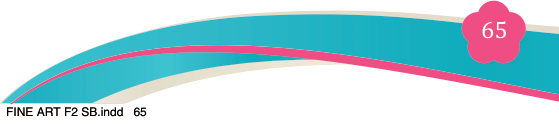
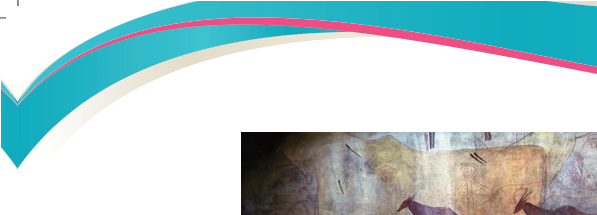
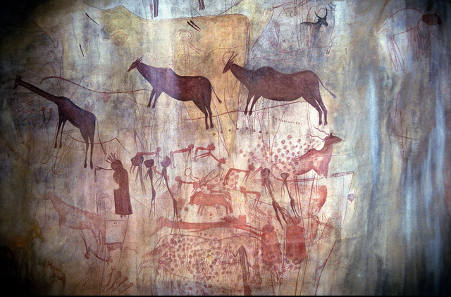
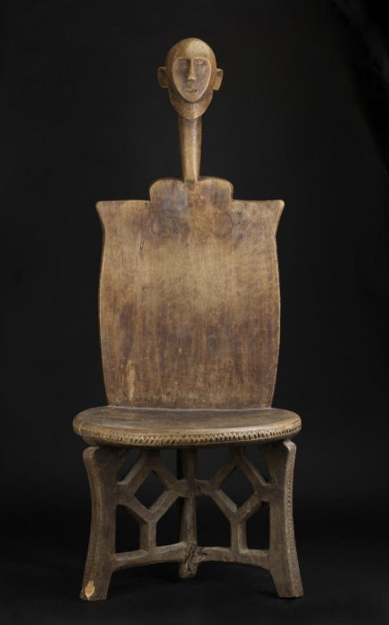

Fine Art for Secondary Schools

65


Student’s Book Form Two

Figure 4.1: Kondoa Irangi wall paintings
Source: info @serengetinationalparksafaris.com

(a) (b)
Fig 4.2 (a & b): Traditional Nyamwezi Objects
Types of simple functional painting
There are three types of functional painting, namely decorative and utilitarian functional painting.
(i) Decorative functional painting
These are painting concepts that propose the design of functional objects
along with their colour schemes. Such painted representations should be
created using the elements of art and the principles of design. Examples
include vases, trays, and coasters—items that not only enhance the aesthetic appeal of a room but also serve practical purposes, such as holding flowers or displaying other object.
04/08/2025 13:54